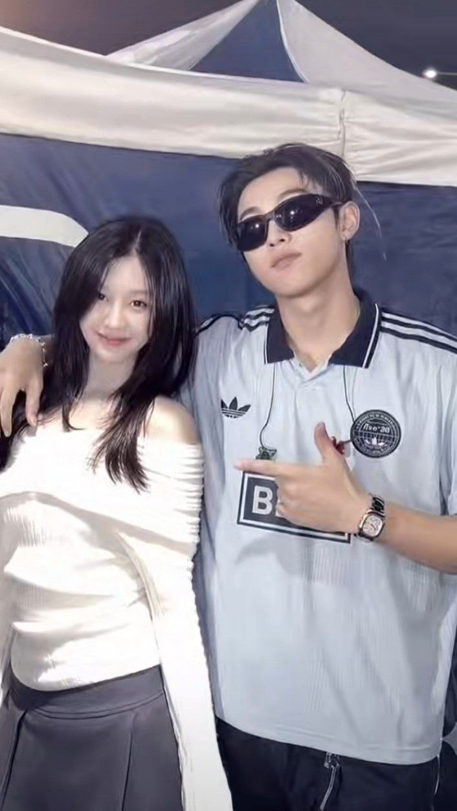
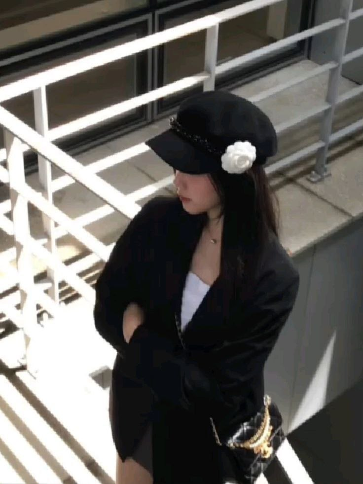
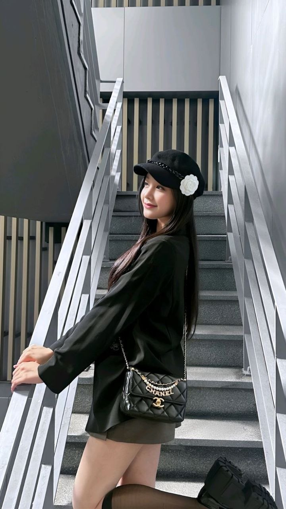
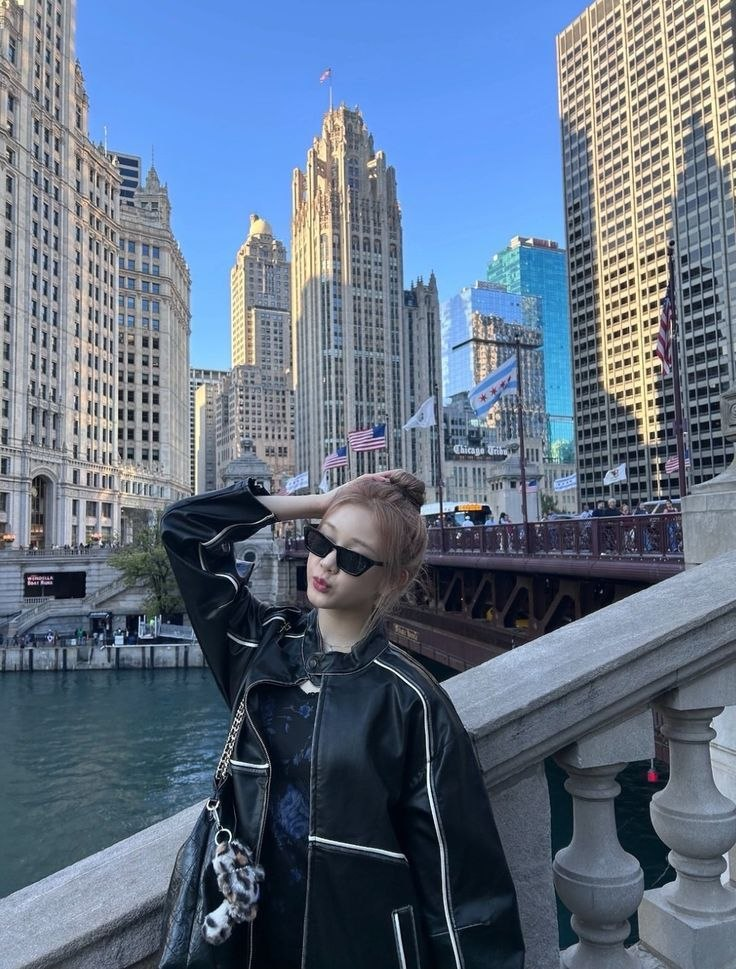
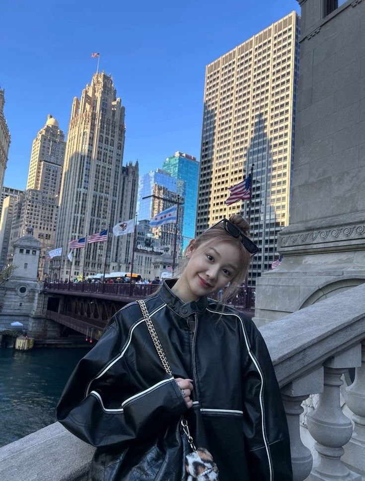

❤️ Pertama Kali Melihatmu
Entah kenapa, sejak pertama melihatmu aku merasa ada sesuatu yang berbeda.
Ada sesuatu yang sudah lama ingin aku sampaikan kepadamu.
Hai, Seraphina. 🤍
Sebenarnya ada satu hal yang sudah
cukup lama ingin aku sampaikan.
Aku masih ingat bagaimana awalnya
aku mengenal kamu. Entah kenapa,
sejak pertama kali melihatmu,
ada sesuatu yang terasa berbeda.
Waktu itu mungkin aku sendiri
belum benar-benar mengerti apa
yang aku rasakan. Aku hanya tahu
kalau ada seseorang yang tiba-tiba
berhasil menarik perhatianku.
Tapi setelah itu, kita sempat menjadi
asing. Ada jarak, ada waktu yang
berjalan, dan akhirnya kita menjalani
kehidupan masing-masing.
Sampai akhirnya sekarang kita bisa
dekat lagi.
Dan anehnya, perasaan yang dulu
pernah aku rasakan ternyata belum
benar-benar hilang.
Justru setelah kita mulai dekat lagi,
aku semakin sadar kalau aku memang
nyaman saat berbicara denganmu,
senang saat bersamamu, dan selalu
menunggu kesempatan untuk bisa
ngobrol lagi denganmu.
Mungkin karena itu aku akhirnya
memberanikan diri membuat ini.
Aku nggak tahu setelah kamu membaca
ini semuanya akan menjadi seperti apa.
Aku juga nggak ingin membuatmu merasa
harus menjawab sesuatu dengan cepat.
Aku cuma ingin kamu tahu satu hal.
Aku suka sama kamu, Seraphina.
Bukan cuma karena kamu terlihat
menarik di mataku sejak pertama kali
aku melihatmu, tapi karena semakin
aku mengenalmu, semakin aku ingin
mengenalmu lebih jauh.
Setelah sempat asing dan akhirnya
dipertemukan kembali seperti sekarang,
aku merasa mungkin ini adalah waktu
yang tepat untuk akhirnya jujur.
Jadi...
Seraphina, maukah kamu memberi aku
kesempatan untuk mengenalmu lebih
dekat lagi?
Aku nggak menjanjikan semuanya akan
selalu sempurna.
Tapi aku ingin memulai sesuatu yang
baik, perlahan-lahan, tanpa terburu-buru.
Terima kasih sudah hadir lagi
di hidupku.
Dari Rafka,
yang akhirnya berani mengatakannya. ❤️
Lima foto, lima cerita, dan satu alasan kenapa aku akhirnya berani jujur.

Awalnya cuma melihatmu, lalu tanpa sadar mulai menyukaimu.
Ada sesuatu tentang kamu yang selalu berhasil menarik perhatianku.
Sempat menjadi asing, tapi ternyata rasa itu tidak benar-benar pergi.
Sampai akhirnya kita bisa dekat lagi seperti sekarang.
Dan kali ini, aku memilih untuk tidak menyimpan perasaanku sendiri.Entah kenapa, sejak pertama melihatmu aku merasa ada sesuatu yang berbeda.
Awalnya hanya rasa penasaran, tapi perlahan berubah menjadi rasa suka.
Waktu berjalan dan kita sempat menjalani hari masing-masing.
Sampai akhirnya kita kembali dekat dan aku sadar bahwa perasaanku masih ada.
Hari ketika aku akhirnya memberanikan diri untuk mengatakan apa yang selama ini aku rasakan.
Tiga lagu yang menurutku cocok untuk cerita ini.
Mungkin semuanya berawal dari
pandangan pertama.
Lalu kita sempat menjadi asing,
sampai akhirnya dipertemukan
dan dekat lagi.
Aku nggak tahu apakah ini adalah
waktu yang tepat atau tidak.
Tapi aku tahu, kalau aku terus
diam, mungkin aku akan selalu
penasaran dengan apa yang
sebenarnya bisa terjadi.
Jadi untuk pertama kalinya,
aku mau mengambil kesempatan
dan mengatakan semuanya.
Seraphina, aku suka kamu.
Kalau kamu berkenan, aku ingin
mengenalmu lebih dekat lagi.
Pelan-pelan saja.
"Kadang seseorang datang, pergi, lalu kembali lagi untuk menunjukkan bahwa perasaan itu memang belum selesai."
Dari seseorang yang akhirnya berani,